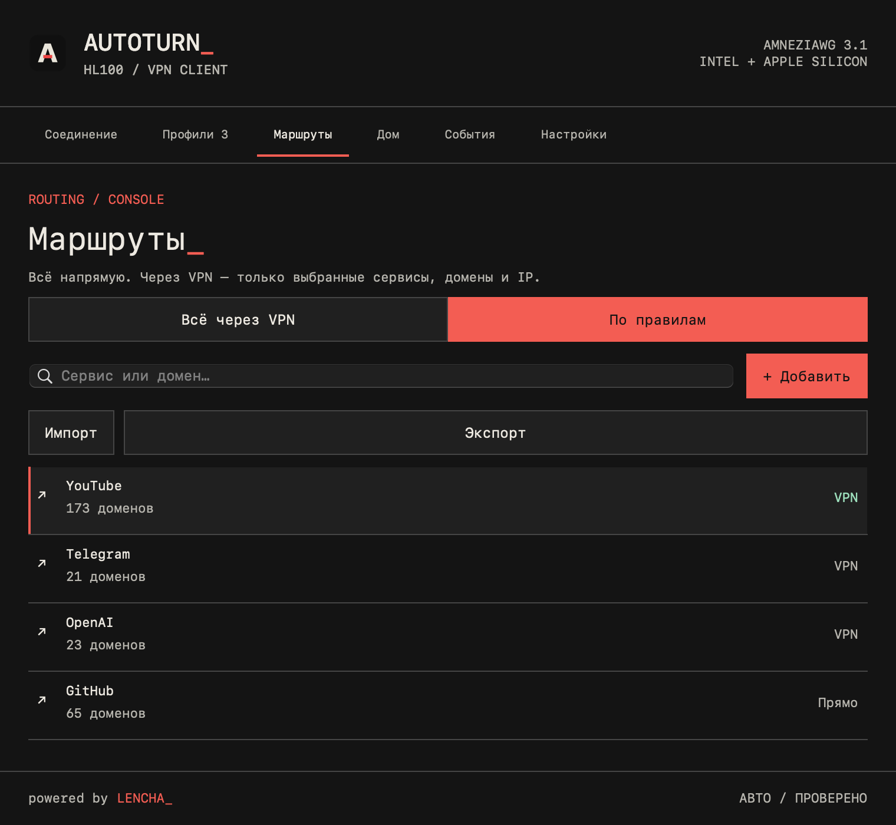
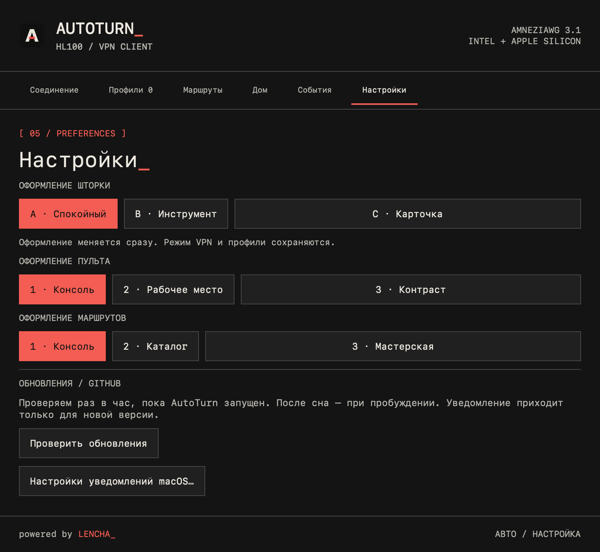

Дома — напрямую.
Вне дома — VPN.
AutoTurn подстраивает VPN под вашу сеть. Нативный пульт, AmneziaWG и маршруты, которыми управляете вы.
Универсальный ZIP · ваш VPN-сервер · powered by LENCHA_

НАСТОЯЩИЙ ИНТЕРФЕЙС · ДЕМОНСТРАЦИОННЫЕ ПРОФИЛИ

Ваш VPN.
Ваш маршрут.
Направьте через туннель весь интернет или только выбранные сервисы, домены и IP. В выборочном режиме остальные соединения идут напрямую.
Встроенный каталог помогает выбрать сервисы. Свои правила можно импортировать, сохранить и перенести на другой Mac.
При недоступном туннеле выбранные VPN-направления остаются заблокированными.
Подробнее о маршрутах ↗
Настройте один раз.
Дальше — «Авто».
Добавьте домашние Wi-Fi: дома AutoTurn отключает VPN, вне дома включает. Переключить режим вручную можно из верхнего меню.
Несколько профилей дают резервное подключение. Профили хранятся в Связке ключей. Закрытие пульта оставляет приложение работать.
Выберите оформление пульта, меню и маршрутов — независимо друг от друга.
От ZIP до подключения.
Установите приложение
Скачайте ZIP, распакуйте и перенесите AutoTurn.app в «Программы».
Импортируйте профиль
Добавьте свой AmneziaWG .conf кнопкой или перетаскиванием.
Установите службу
Нажмите кнопку в пульте и подтвердите права администратора.
Выберите «Авто»
Разрешите чтение имени Wi-Fi и добавьте домашнюю сеть.
Приложение подписано ad hoc, без Developer ID и нотариализации. Если macOS блокирует запуск, разрешите именно AutoTurn в «Системные настройки → Конфиденциальность и безопасность». Отключать защиту системы не требуется.
Большое обновление.
Знакомый AutoTurn.
Для пользователей 0.1.9: проверьте обновления в приложении. Профили и настройки сохраняются.
Все изменения с 0.1.9 ↗- Выборочные маршруты, каталог сервисов и импорт IP-списков.
- Отдельная страница маршрутов с тремя оформлениями.
- Контроль падения компонентов и восстановление интернета.
- Усиленная проверка профилей, сетевых запросов и пакетов обновления.
- Обновления подписаны прежним ключом для совместимости со старым клиентом.
Перед первым подключением.
Нужен ли собственный VPN-сервер?
Да. AutoTurn — клиент для вашего AmneziaWG-профиля. Сервер или подписка в приложение не входят.
Работает на Intel и Apple Silicon?
Да, ZIP содержит обе архитектуры. Минимальная версия — macOS 13. Rosetta не требуется. CI проверяет нативный запуск компонентов на обеих архитектурах.
Как получить новую версию?
AutoTurn проверяет GitHub раз в час. Также можно нажать «Проверить обновления». Загрузка и установка начинаются по вашему действию; macOS запросит права администратора.
Что делать, если пропал интернет?
Откройте пульт и используйте восстановление интернета. Для прямого доступа выберите «Выключить». Если восстановление сообщает ошибку, проверьте результат и состояние службы.
Зачем разрешение геолокации?
macOS требует его для чтения имени Wi-Fi. AutoTurn использует имя сети для домашнего режима; координаты не сохраняются и не отправляются.
Какие ограничения есть сейчас?
IPv6-only внешние сети и IPv6 Endpoint пока не поддерживаются. Шифрованный DNS браузера и общие IP сервисов могут влиять на выборочную маршрутизацию. Реальную сеть и сервер нужно проверить в своём окружении.